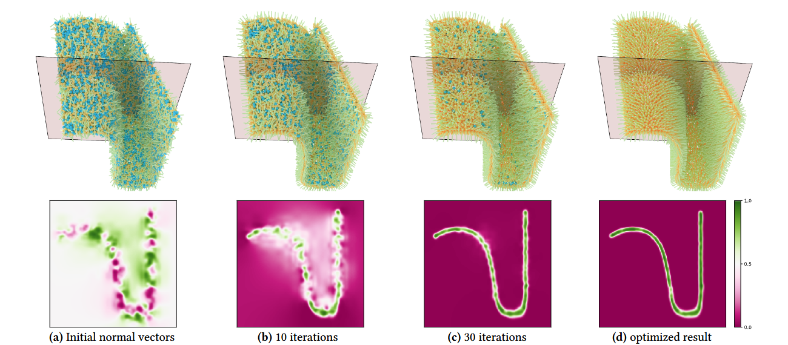
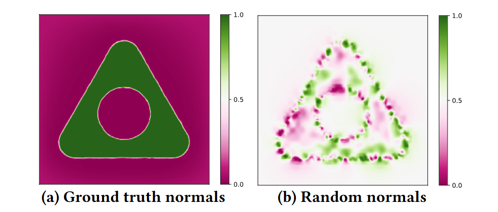

Stochastic Normal Orientation for Point Clouds
| Guojin Huang Qing Fang Zheng Zhang Ligang Liu Xiao-Ming Fu | ||
| University of Science and Technology of China | ||
ACM Transactions on Graphics (Proc. SIGGRAPH Asia), 43(6), 2024.
|
 Figure 1: Starting from a set of completely random normals (a), we repeatedly optimize their directions (b,c) until convergence (d). |
|
|
Abstract |
We propose a simple yet effective method to orient normals for point clouds. Central to our approach is a novel optimization objective function defined from global and local perspectives. Globally, we introduce a signed uncertainty function that distinguishes the inside and outside of the underlying surface. Moreover, benefiting from the statistics of our global term, we present a local orientation term instead of a global one. The optimization problem can be solved by the commonly used numerical optimization solver, such as L-BFGS. The capability and feasibility of our approach are demonstrated over various complex point clouds. We achieve higher practical robustness and normal quality than the state-of-the-art methods.
|
| Keywords |
Normal orientation, Gaussian processes, Surface reconstruction |
| Motivation |
|
| Methods |
The method proposed in this paper involves optimizing a stochastic probability model where the variables are the distributions of point normals. By leveraging the SRSR probability model, we observe that if the normals are accurate and reliable, the probability of a point being inside the shape approaches 1 when the point is inside the surface and approaches 0 when the point is outside the surface. Conversely, if the normals are random or inconsistent, the probability tends to approach 0.5. 
Figure 2: The probability that the point in space belongs to the interior of the surface tends to 1 or 0 if the normals are correct (a). The probability that the point in space far from point clouds belongs to the interior of the surface is close to 0.5 if the normals are random (b).
This probability distribution can be used to measure spatial uncertainty and quantify the quality of normals, allowing us to define an uncertainty function for optimizing normal quality. However, the uncertainty function defined solely by the probability distribution lacks directional guidance. To address this, we introduce a local directional term, which yields a positive value outside the surface and a negative value inside the surface when the normals are correct and reliable, thereby creating a signed uncertainty function. By using L-BFGS to optimize this signed uncertainty function, we obtain consistent normal directions.
|
| Paper |
|
| Software |
Code |
| Ack |
|
| BibTex |
@article {huang2024reconstruction, title = {Stochastic Normal Orientation for Point Clouds}, author = {Huang, Guojin and Fang, Qing and Zhang, Zheng and Liu, Ligang and Fu, Xiao-Ming} journal = {ACM Transactions on Graphics}, volume={43}, number={6}, pages={1--11}, year = {2024} } |
|
Copyright and disclaimer: |